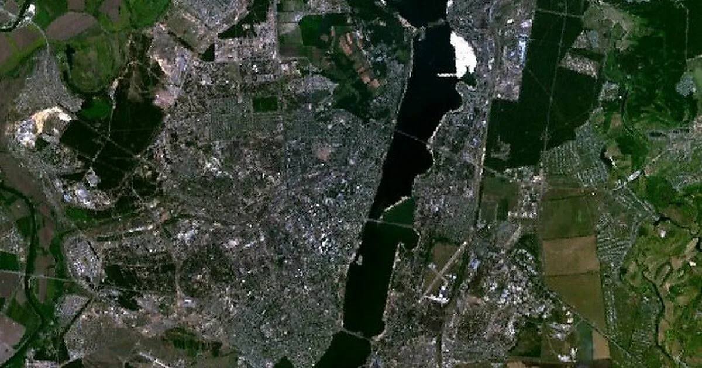
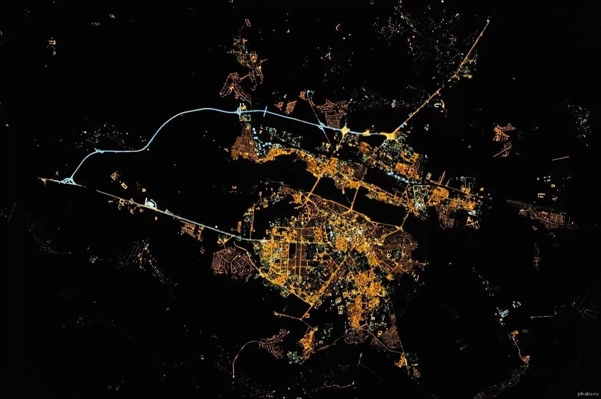
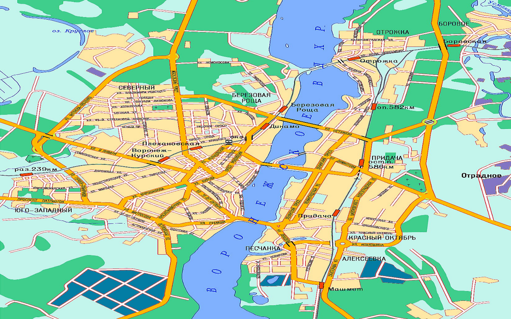
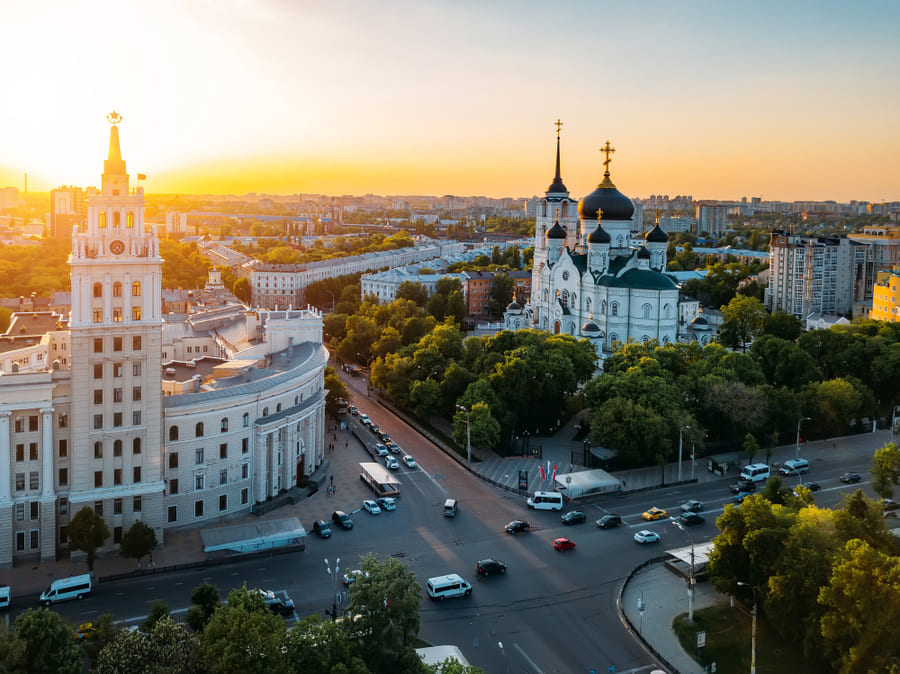
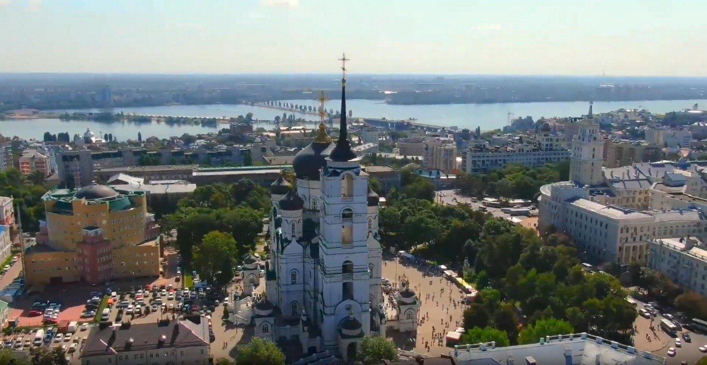
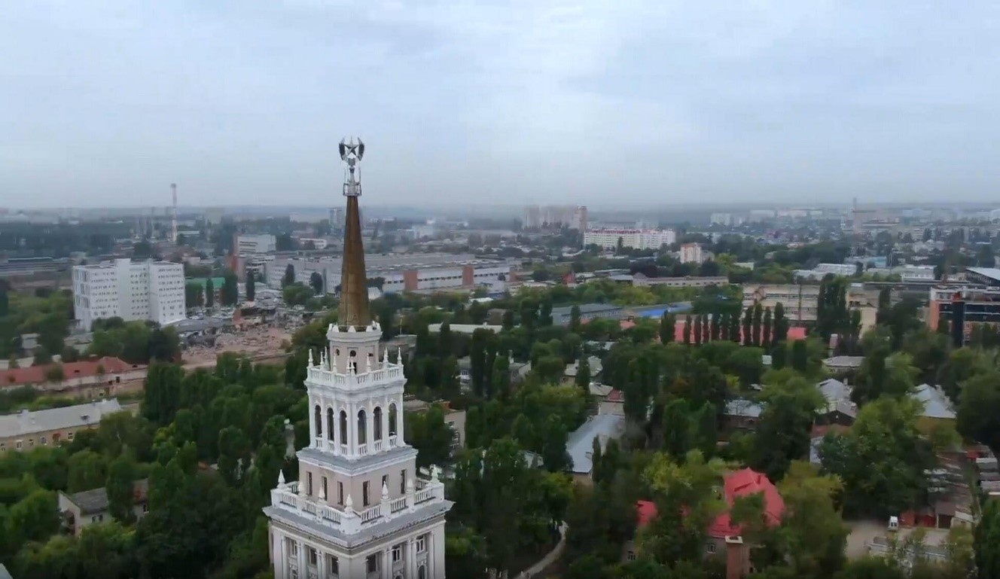
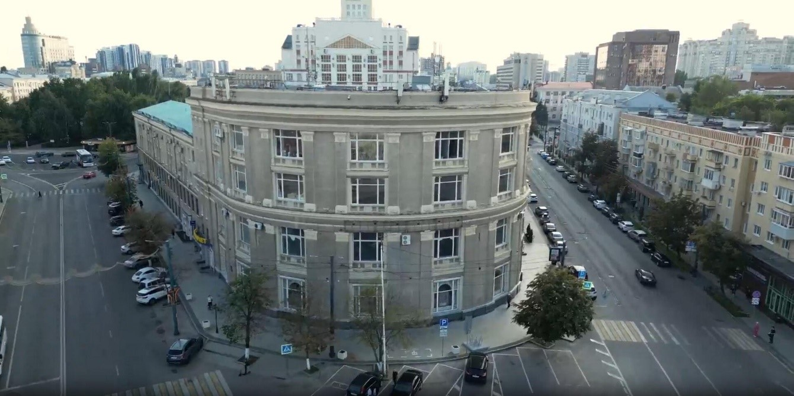

---> 1. Официальные ресурсы / сайты города:
• Официальный сайт: Администрация городского округа город Воронеж.
• Туристический портал: Visit Voronezh — маршруты, события и гид по городу.
• Культурный портал: Культурный регион — афиша и знаковые места.
---> 2. Общие сведения:
• Статус: Административный центр Воронежской области.
• Население: Более 1 000 000 человек (город-миллионник).
• Основание: 1586 год.
• Часовой пояс: UTC+3 (Московское время).
• Особенности: Город разделен Воронежским водохранилищем на Правый (исторический) и Левый берега.
---> 3. Карта Воронежа и вид со спутника:



---> 4. Историческая справка:
• Петровская эпоха: В 1696 году Петр I выбрал Воронеж местом строительства первого регулярного военно-морского флота России. Именно здесь был спущен на воду линкор «Гото Предестинация».
• Военная слава: Воронеж — Город воинской славы. В годы ВОВ город был практически полностью разрушен, но 212 дней героически сдерживал врага, не дав замкнуть кольцо вокруг Сталинграда.
• Достижения: В 1930 году здесь был произведен первый в СССР десант, что сделало город «Родиной ВДВ».
---> 5. Фотогалерея города:




---> 6. Достопримечательности города:
• Корабль-музей «Гото Предестинация» : Полноразмерная копия первого российского линейного корабля, созданного по проекту Петра I. Стоит на Адмиралтейской площади.
• Памятник Котенку с улицы Лизюкова : Один из самых добрых памятников России, посвященный герою известного мультфильма. Находится в Северном районе.
• Благовещенский собор : Один из самых высоких православных храмов мира, построенный в русско-византийском стиле. Главный духовный центр города.
• Памятник Белому Биму : Трогательная скульптура псу из повести воронежского писателя Г. Троепольского, расположенная у театра кукол «Шут».
• Адмиралтейская площадь : Место, где зародился флот. Здесь проходят главные городские праздники, открывается отличный вид на водохранилище.
---> 7. Отрывок из гимна:
Славься, Воронеж, наш город старинный,
Славься, защитник российских границ!
Славься, наш край хлеборобный и мирный,
В блеске созвездий и свете зарниц!
Послушать и посмотреть:
Песня о Воронеже — С. Гребенников (видеоклип)
{kind=link}